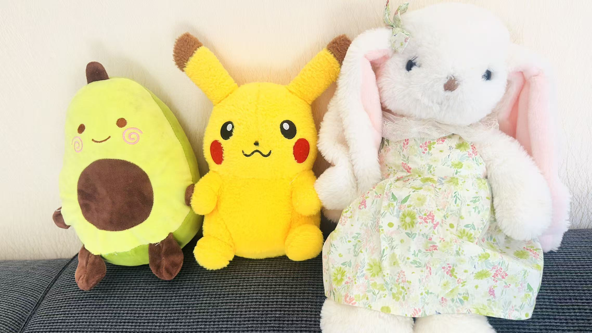
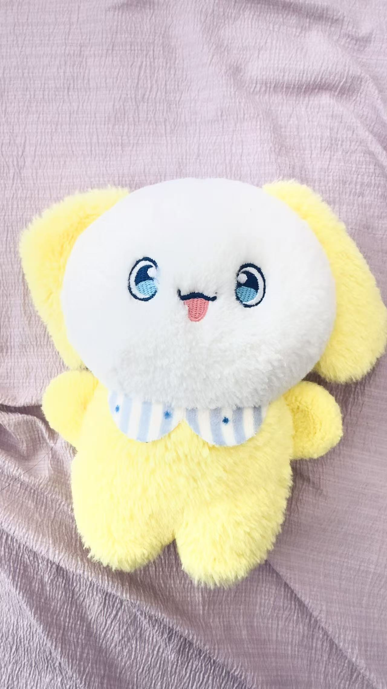
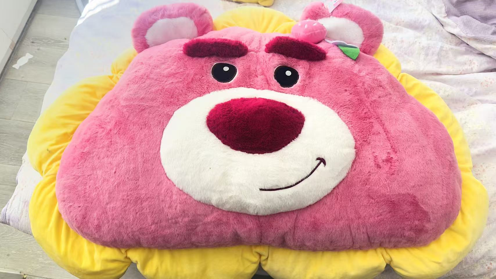
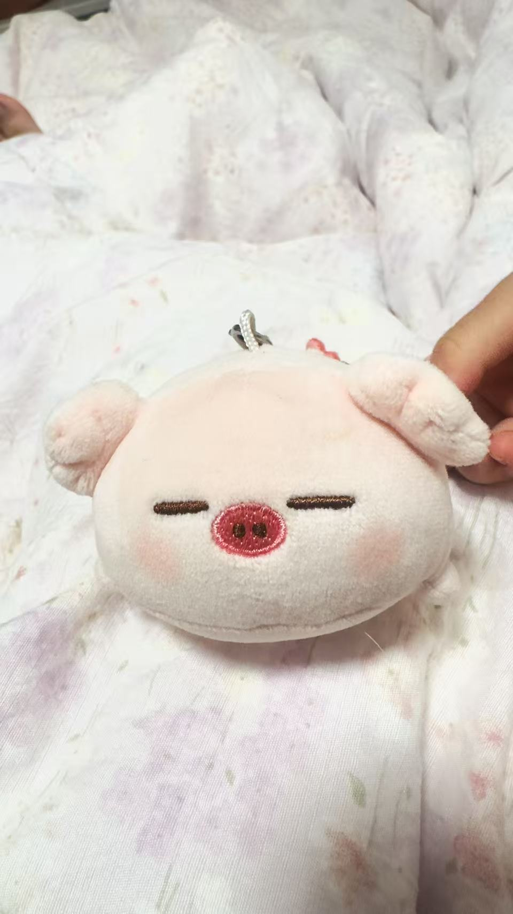
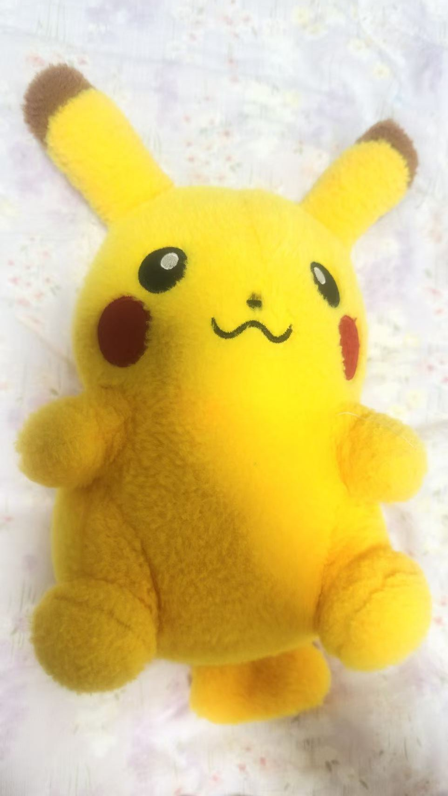
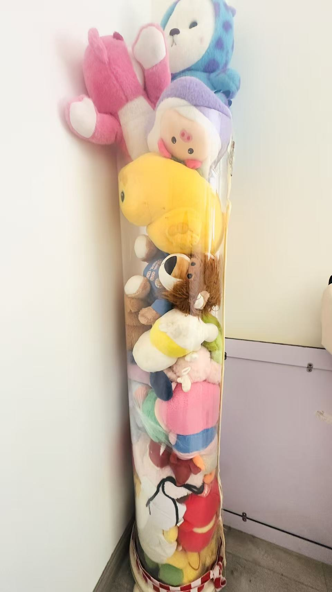
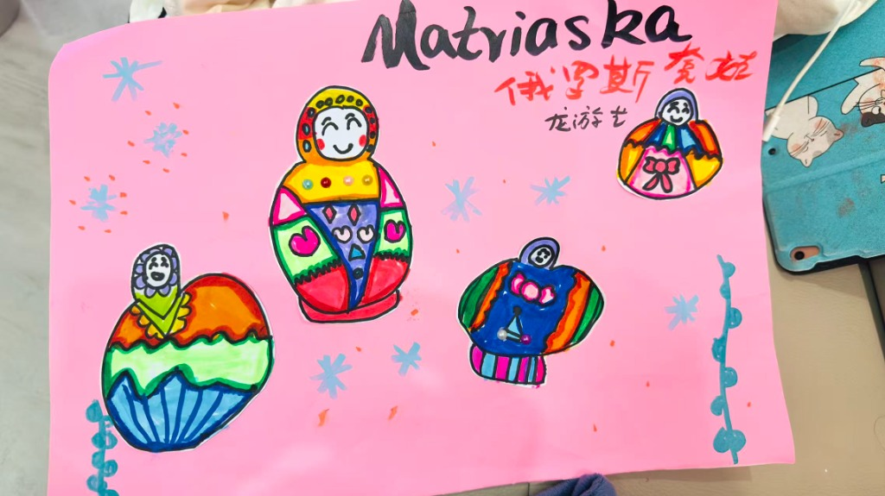
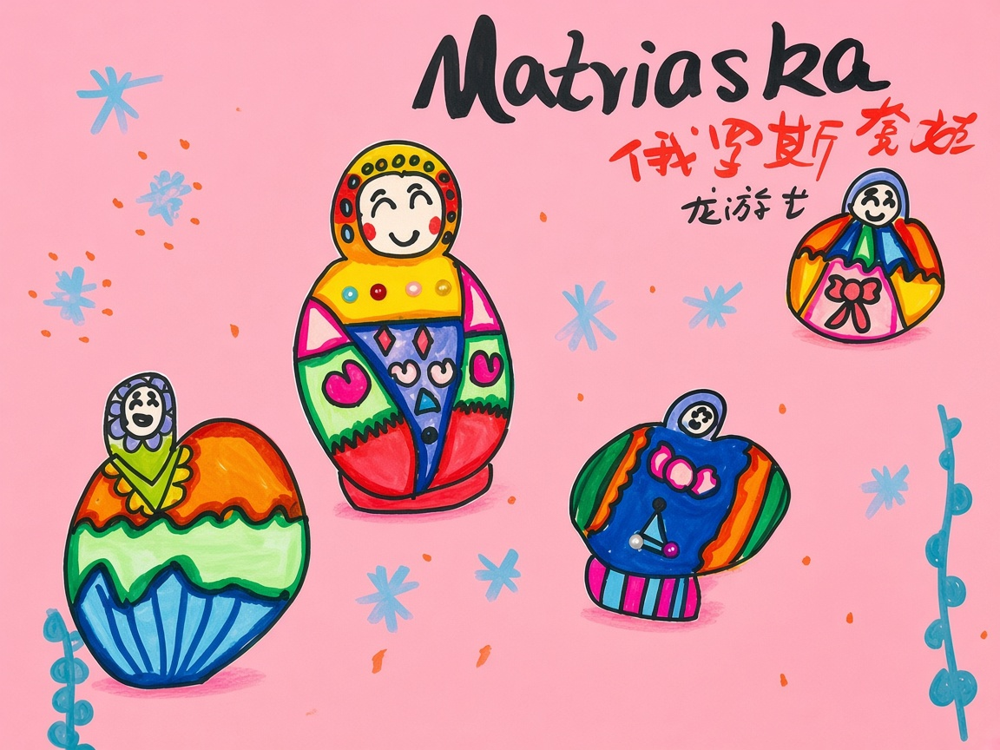

我如何用 Grok Bot
陪 5 岁女儿玩和学？

开放讨论

你觉得，育儿的
第一性原理是什么？
高质量陪伴
每个有娃的家，大概都有一堆玩偶





到处都是

打入冷宫

偏爱
补参考图迭代，把动画角色改像
故事和台词 → 角色参考 → 分镜 → 配音字幕 → 成片


01
老虎画成熊 → 补玩偶参考图
02
反复微调 → 女儿能认出自己
把孩子手绘原画，做成 6 秒打招呼动画

01 原画

02 平面精修
03 3D 造型
04 6 秒动画
保留原画细节与署名「龙游七」
只给最大套娃加一只小手
把手机变成创作和学习工具
用来画画、创作、学习，把自己的想法做出来。